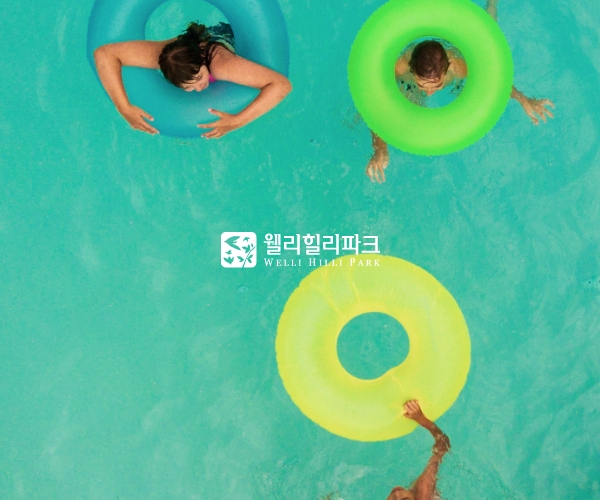

본문 바로가기
메뉴 바로가기 test
Who we are
We make
XTSIEN Life
Contact XT
Start a project x Download pdf
M
E
N
U
XT
Works
XTSIEN Life
Contact
News
Download XT profile pdf
우리는
새로운 것에 유연
합니다.
새로운 것을 만나고 많은 것을 경험하고 자라지만
우리에 시선은 항상
새로운 곳을 향하여 있어
멈추지 않고
또 다시 지속적으로 탐구하고 그려 냅니다
Growth X Flexible
X
T

웰리힐리파크
당신이 상상하는
모든 것이 즐거움이 된다
eXperience it
한화아쿠아플라넷
살아 숨쉬는 그 곳
즐거움이 현실이 됩니다.
eXperience it